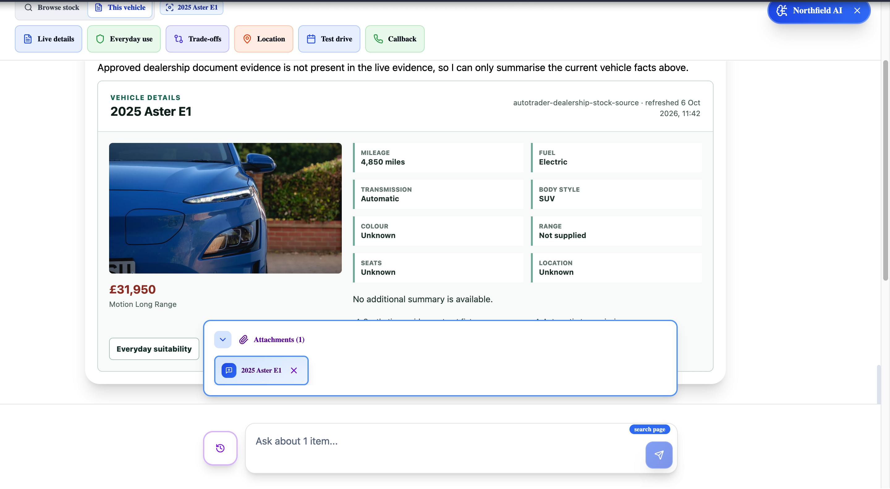
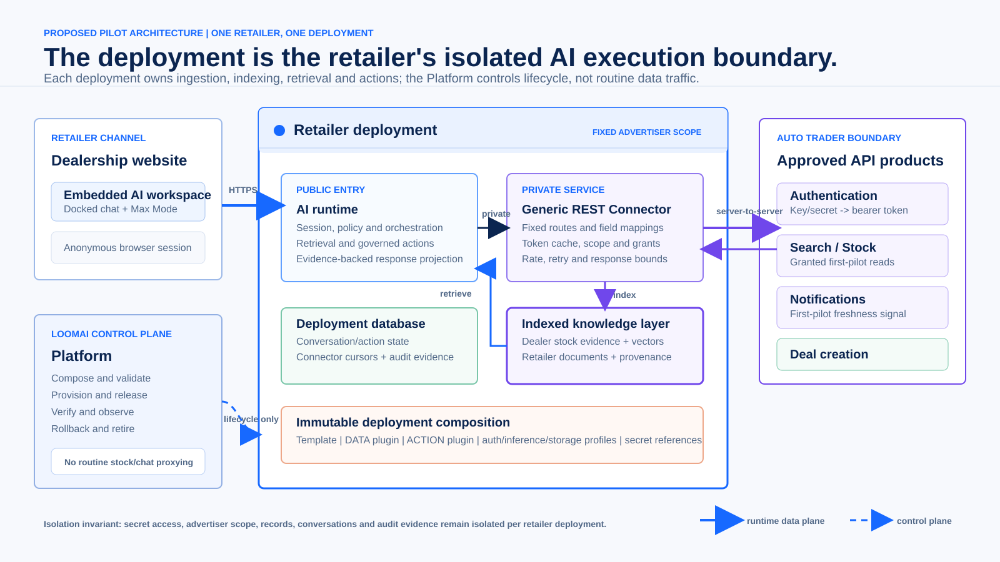
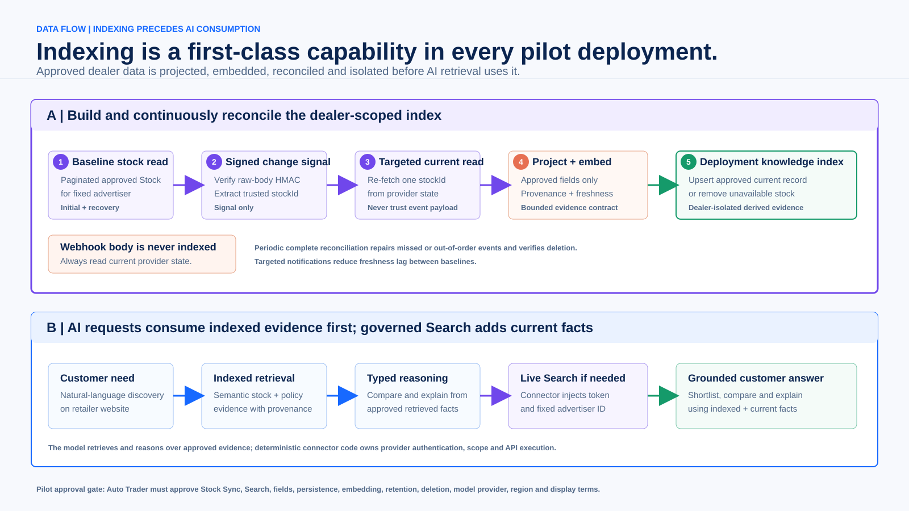

Dealer-scoped indexed intelligence for dealership websites.
Loom AI Labs proposes one isolated deployment for one authorized retailer: synchronized Auto Trader stock becomes governed AI evidence, customers receive a richer vehicle workspace, and confirmed intent returns to Auto Trader's Deal flow.
Auto Trader remains the inventory, advertiser-product and Deal authority. The browser and model never receive provider credentials or direct API authority.
From assistant to intelligent workspace
Natural-language discovery and comparison over an indexed, retailer-scoped stock projection.
Contextual tools, attached vehicle context and retailer policy evidence in one working surface.
Governed live facts when freshness or verification is needed.
Explicitly confirmed customer handoff into Auto Trader rather than a competing lead system.
Pilot status: proposed for technical validation; no Auto Trader access, approval, certification or participating retailer is currently claimed.

Current LoomAI demonstration using fictional inventory. Max Mode turns the website assistant into a contextual workspace; it is not limited to a chatbot response stream.
Use
Endpoint or mechanism
Capability
Proposed treatment
Authenticate
POST /authenticate
Integration auth
Connector-only key/secret exchange; cache bearer token until expiry.
Indexed dealer stock
Paginated GET /stock, notifications and targeted stock read
Stock Sync
Required pilot ingestion and freshness path; maintain an isolated projection and remove unavailable stock.
Governed live lookup
GET /search?advertiserId=...
Search
Query-time companion for approved current dealer-scoped facts and verification.
Customer handoff
POST /deals?advertiserId=...
Deal Updates
Explicitly confirmed identity fields and trusted stock target; return Auto Trader dealId.
Architecture | one retailer, one deployment

Fixed scopeOne non-overridable advertiser binding per pilot deployment.
Private executionBrowser and model never receive provider credentials or connector access.
Deployment-local dataConversation, index and audit state are isolated by retailer.
Control plane onlyThe Platform releases and verifies; it does not proxy routine traffic.
Data movement | first-class indexing and governed Search

Current synthetic simulator sequence
POST /authenticate -> paginated GET /stock -> signed notification PUT -> targeted GET /stock?...&stockId=....
This proves connector mechanics only. It is not an Auto Trader sandbox, entitlement or exact production emulator.
Proposed projection
Stock/search identity, freshness/lifecycle, publication status, make/model/derivative/year, fuel/body/transmission, mileage, displayed price, selected features and approved image reference.